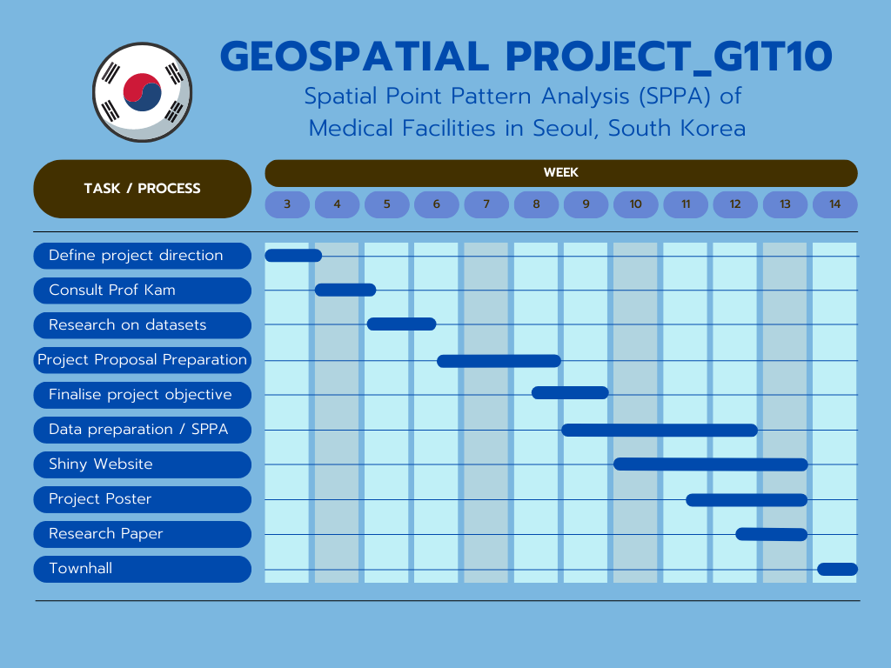

Geographical Weighted Regression on Seoul’s Healthcare Facilities
Abstract
The accessibility of healthcare facilities like hospitals are crucial to ensure the equal access of medical services to all individuals, regardless of their socio-economic background or geographical location. In South Korea, recent evidence suggests that there may be disparities in access to hospitals, with certain populations and regions experiencing higher difficulties in obtaining necessary healthcare services. This study aims to find out the regions with limited access to hospitals in South Korea. By analyzing the spatial data, we seek to identify patterns and trends in hospital accessibility. Our findings will provide valuable insights for policymakers, healthcare providers, and other stakeholders to address this pressing issue and improve the overall quality of healthcare in South Korea.
Project Statement
Despite the advancements in South Korea’s healthcare system, a significant proportion of the population may still experience challenges in accessing hospitals and receiving timely medical care. Limited accessibility to hospitals can lead to delays in diagnosis and treatment, exacerbate health disparities among socio-economic groups, and negatively impact the overall health outcomes of the population. The factors contributing to this issue may include uneven distribution of healthcare facilities, inadequate public transportation networks, and socio-economic barriers. We will be analyzing the gaps in the location of the healthcare facilities to see if South Korean residents living in Seoul have adequate accessibility to healthcare services.
Projects Objective
The objective of this project is to allow the end-user to use our model to identify areas with low healthcare accessibility. This app will also show the difference between the conventional and Network Constrained Spatial Point Analysis. Hence, the app will not only provide insights into healthcare accessibility but also serve as an educational tool on the different types of Spatial Point analysis.
App Functions:
- Spatial Point Pattern Analysis
Visualisation of variable points
Kernel Density Plots
K, L Function plots and analysis
Co-Location Analysis
Visualisation of Local Co-Location Points
Co-Location Statistical interpretation
Network Constrained Spatial Point Analysis
Visualisation of points and network
Visualisation of NetKDE
Network Constrained K-Function Analysis
The application will provide 3 levels of analysis, spatial points analysis, network constrained Spatial Point Pattern Analysis and Co-location analysis. The first analysis will showcase the conventional spatial point pattern analysis and draw insights from the findings. The second analysis will showcase the network constrained Spatial point pattern analysis and lastly co-location analysis can help us to understand the spatial patterns of hospitals in Seoul and identify areas where they may be gaps in healthcare service provision.
By using South Korea and Seoul in particular, we hope to showcase how our app operates such that our model can be applied to your selected country.
Data
The purpose of this review aims to explore the potential of Spatial Point Pattern Analysis for understanding the spatial patterns of how healthcare facilities are placed in South Korea with respect to their accessibilities.
Several Korean researchers analyzed the accessibility of welfare facilities in Daejeon in consideration of their public transport network. In their research, several tools were used such as thematic maps that illustrated bus stop location, bus networks, train networks. They have also calculated distance and time to measure spatial accessibility and visualized their findings. Overall, the study found that improving public transport accessibility would increase spatial equity of welfare services for the residence.
With many countries experiencing an aging population, it is important that such facilities remain accessible to all. Hence, we can apply Spatial Point Pattern Analysis to analyze the spatial patterns of healthcare facilities in consideration of their accessibility. This is to understand the problem statement better and suggest recommendations.
Methology
Spatial point patterns analysis (SPPA)
1st Order
2nd Order
- Network Constraint Spatial Analysis
- Co-location Analysis
This project examines the accessibility of residents in Seoul Sub district to healthcare facilities. We collected data including geospatial forms, location, routes, and population in sub district of Seoul. By using spatial point pattern analysis would help us to identify any patterns or clusters in the distribution of hospital in the city. We would explore the use of K, G and L functions to measure the degree of clustering in the hospital location. From the results of this, we could suggest certain areas of the district if it is underserved or overserved by healthcare facilities.
Next, we will be using Network constrained spatial point pattern analysis to further analyze spatial point events that occur on the network. We can also identify the hotspot or the clusters of it. The function we will be exploring would be NetKDE, it combines kernel density estimation with network distance metrics to estimate the intensity of point events or objects along the network. It takes into account the distance and connectivity between different points on a network when analyzing spatial patterns. If there are areas of the area with low hospital/clinic accessibility, this could suggest that additional healthcare facilities are needed in those areas to improve access to medical care.
Lastly, co-location analysis is a technique used to analyze the spatial relationship between different features in a particular area. It can be used to determine the proximity and clustering pattern of hospitals/clinics in different areas. We can find out the nearest neighboring between each point of interest that we want to find out. Next, we can show areas of high and low hospital density by using heatmaps. This can help to identify areas if are more or fewer hospitals/clinics and can have a better planning decision in the future.
Timeline
